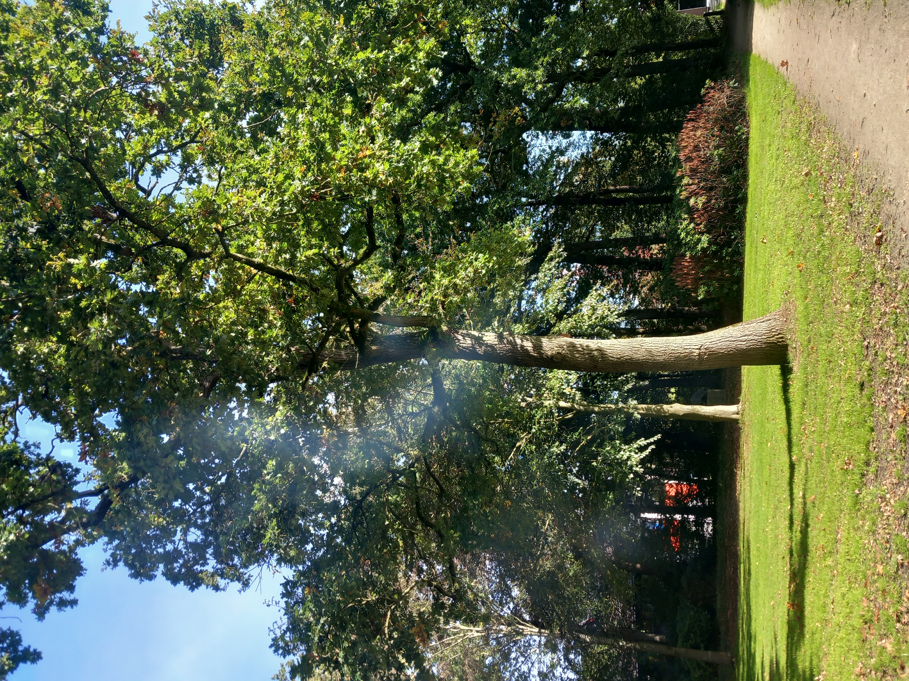

Welkom in mijn verhalenhoek
Soms gebeuren er dingen die je bijblijven. Mooie momenten, bijzondere ontmoetingen en ervaringen waar je iets van leert.
Op deze pagina verzamel ik persoonlijke verhalen en herinneringen die het waard zijn om te delen.
Een verhaal begint klein
Iedereen heeft een eigen verhaal. Soms zit het in een groot avontuur, soms juist in een klein moment dat je dag een beetje mooier maakt.
Dit is de plek om die momenten een plaats te geven.
Een onverwachte ontmoeting op een bankje

Soms gebeuren de mooiste dingen op momenten waarop je ze helemaal niet verwacht.
Tijdens een wandeling waar ik eigenlijk weinig zin in had, besloot ik even op een bankje in het zonnige park te gaan zitten. Een onbekende vrouw vroeg of ze erbij mocht komen zitten.
Wat begon als een eenvoudig moment, werd een bijzonder gesprek. Ongeveer een halfuur praatten we ontspannen met elkaar. Het voelde meteen vertrouwd en we konden ook samen lachen.
Toen we afscheid namen, schudden we elkaar de hand en bedankten we elkaar voor het fijne gesprek. Ik voelde me daarna een stuk optimistischer. De ontmoeting gaf mijn hele dag een positieve draai.
Het herinnerde me eraan dat je soms maar één onverwachte ontmoeting nodig hebt om je dag een andere kleur te geven.
Soms zit geluk gewoon op een bankje in het park.
Een vreemde vrouw, een herkenbare pijn
Vandaag zat ik in de wachtkamer van de ggz. Ik wachtte op mijn afspraak en om me heen ging het leven gewoon zijn gang. Tot mijn aandacht werd getrokken door een gesprek tussen een moeder en haar zoon.
Ik hoorde hoe de vrouw vertelde dat ze het moeilijk had met het feit dat ze zo achteruitging. Ze zat in een depressie, er kwam niets meer uit haar handen en ze voelde zich nutteloos.
Terwijl ik daar zat, gebeurde er iets met me. Ik hoorde niet alleen haar woorden, ik voelde ook de pijn erachter. Ik zag iemand die worstelde met zichzelf en die waarschijnlijk niets liever wilde dan zich weer wat beter voelen.
Haar woorden raakten me, omdat ik weet hoe zwaar het leven soms kan zijn. Hoe moeilijk het kan zijn om dingen voor elkaar te krijgen wanneer je hoofd en je gevoel niet meewerken. Hoe je jezelf soms kunt verliezen in gedachten die je vertellen dat je niets meer waard bent.
Ik wilde eigenlijk naar haar toe lopen. Haar een knuffel geven en zeggen: mevrouw, ik weet dat het nu ontzettend moeilijk is. Maar u bent niet nutteloos. U bent een mens die het zwaar heeft. Dat is iets heel anders.
Ik wilde haar vertellen dat het misschien niet altijd zo zou blijven. Dat ze mocht proberen te vertrouwen op haar gezin en op de hulp die ze kreeg. Dat ze niet alles vandaag hoefde op te lossen, maar stapje voor stapje verder mocht gaan.
Maar ik deed het niet. Het was hun gesprek, hun moment. Ik kende deze mensen niet en wilde me niet ongevraagd mengen in iets wat zo persoonlijk was. Dus bleef ik zitten en liet ik hen praten.
Toch bleef haar verdriet bij me. Ik had haar graag willen laten voelen dat ze niet alleen was. Misschien herkende ik iets in haar wat anderen niet zomaar konden zien. Of misschien was het gewoon dat menselijke gevoel dat je krijgt wanneer je iemand ziet lijden en niets liever wilt dan een beetje van die pijn verzachten.
Ik kon haar niet vertellen hoe haar toekomst eruit zou zien. Ik wist niet hoe lang haar herstel zou duren. Maar ik hoopte dat ze weer momenten zou krijgen waarop het leven iets lichter voelde. Momenten waarop ze iets voor elkaar kreeg, kon lachen en zichzelf weer een beetje terugvond.
Want nutteloos zijn en je nutteloos voelen zijn twee heel verschillende dingen.
Een depressie kan je laten geloven dat je niets meer kunt betekenen. Dat je tekortschiet. Maar die gedachten vertellen niet het hele verhaal over wie je bent. Soms is het al een hele opgave om de dag door te komen. Soms is opstaan genoeg. En soms is hulp aanvaarden een overwinning die niemand van buitenaf ziet.
Toen ik daar zat, besefte ik opnieuw hoe belangrijk het is om mild te zijn voor elkaar. We weten nooit helemaal wat iemand met zich meedraagt. Achter een paar zinnen kan een wereld van verdriet schuilgaan.
Ik heb die vrouw geen knuffel gegeven. Ik heb haar niet verteld wat ik haar zo graag had willen zeggen. Maar in gedachten heb ik haar die warmte wel gegeven.
Ik hoop dat ze mensen om zich heen heeft die haar
blijven steunen wanneer ze zichzelf even niet meer
kan
Deze verhalenhoek groeit stap voor stap.
Later voeg ik hier mijn eigen belevenissen,
herinneringen en bijzondere momenten toe.
Wordt vervolgd...